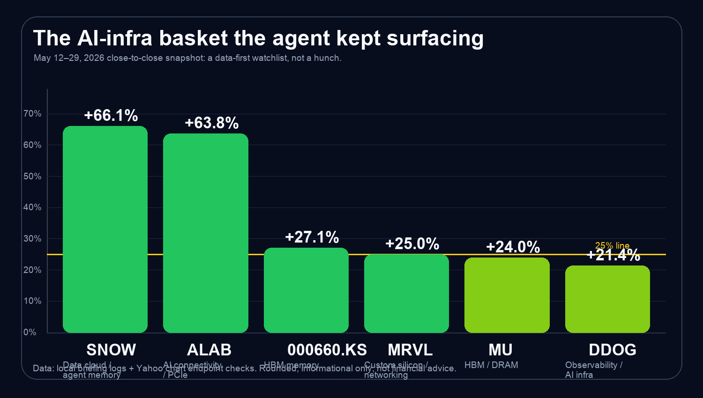
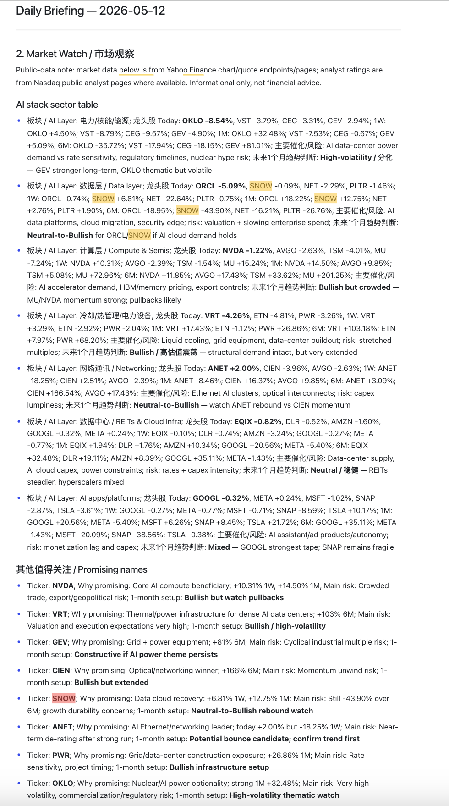
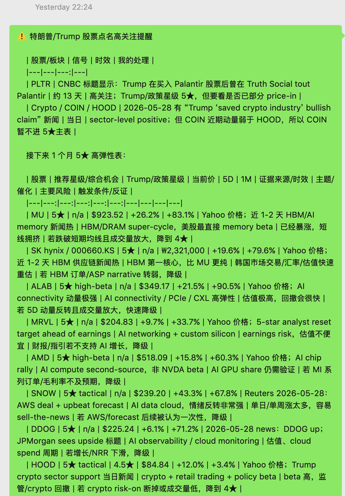
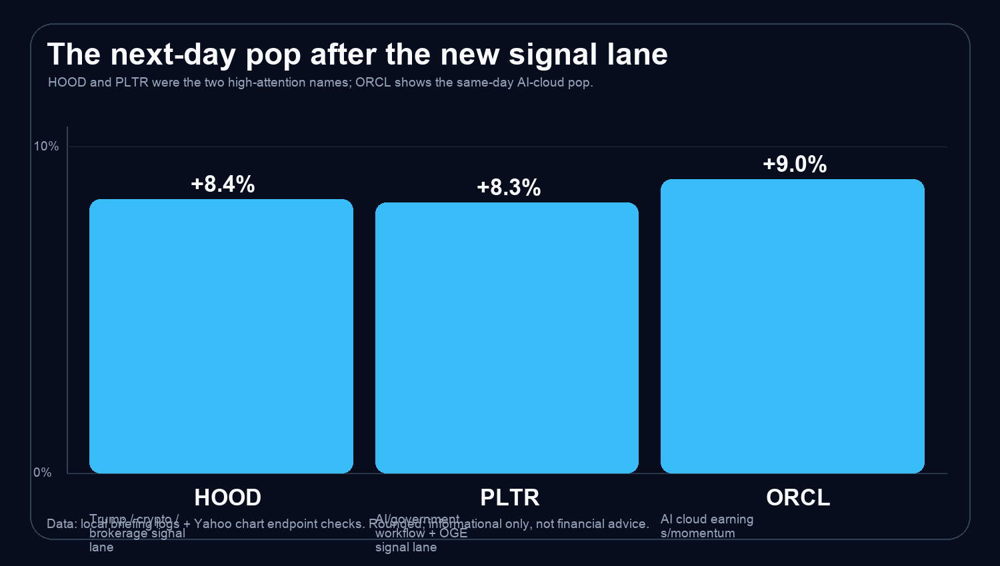

Markets
Agent Stock Skills: +20% in a Month, and Next Week’s AI Watchlist
Three weeks ago, the strongest AI-stock ideas from my agent’s briefings began to rip. All of the bullish AI-infra names in the core evidence set below were up more than 20%; the best one, SNOW, was up about +66.1%, and the average was about +37.9%. Then last night, two newly surfaced names — HOOD and PLTR — jumped roughly 8–9% the next day.
Disclosure / disclaimer: This is my personal case study and workflow note. It is not personalized investment advice, not a recommendation to buy or sell any security, and not a guarantee of future performance. Market numbers are rounded snapshots from local logs and public market-data checks.
My thesis is simple: when an agent has million-token context, can rapidly track and summarize policy, news, company/regulatory disclosures, expert commentary, and market data, and also has superhuman intelligence plus industry insight, it should be stronger than an average retail investor. I have decided to fully embrace agents — while still keeping reasonable cash, S&P 500 exposure, and a dedicated agent-AI-stock position.
The explosive opening
What shocked me was not that one stock went up. One lucky pick means nothing. What shocked me was that the stocks my agent had repeatedly mentioned over the previous twenty days all rose more than 20% in this evidence set. That is the moment when a daily briefing stops feeling like a notification and starts feeling like a real research edge.

The actual agent evidence: May 12
Here is the important part: I am not rewriting history from memory. I have the agent’s briefing screenshots. On May 12, the agent was already organizing the market around AI infrastructure and surfacing bullish names such as MU, DDOG, ANET, TSM, OKLO, ORCL and other AI-stack stocks. The key point is that the bullish stocks it mentioned did rise afterward; the strongest evidence group shown in this post ended up all above +20%, with the best one up about +66.1%. It was not saying “buy everything.” It was separating momentum, risk, one-month setup, and the reason each name mattered.

The second evidence point: May 28
Then on May 28, the agent again surfaced the next signal lane. This time the interesting names included HOOD and PLTR. The next day they jumped about 8–9%. This is the type of event that makes me take the workflow seriously: not because every signal will work, but because the agent can keep watching a huge information surface that I cannot manually track every day.


Rule of thumb #1: retrieval before judgment
My first rule is that the agent is not allowed to hallucinate a market opinion. It has to retrieve and organize the evidence first: market data, expert and analyst views, earnings and product catalysts, policy/news context, Trump-related signals when relevant, and then use its cross-industry understanding to judge whether the signal is real, timely, and actionable as research.
Rule of thumb #2: news and policy need real context
My second rule is that a headline alone is not enough. Policy, earnings, Trump posts, OGE disclosures, AI-capex headlines, data-center power constraints, HBM shortage, and analyst upgrades all matter, and the agent puts them into real context: price action, sector confirmation, source quality, time sensitivity, and a clear mechanism.
Rule of thumb #3: Trump-index and time sensitivity
Trump is a market-moving information source, but the signal is not just about speed; it also needs a Trump-index layer. A direct Truth Social or X post, an official disclosure, a White House or Treasury release, and a credible wire summary should not be treated the same as old social chatter. The agent’s job is to classify source quality, Trump relevance, and signal age before the information becomes stale.
My portfolio buckets: cash, S&P 500, and agent-suggested AI stocks
I have a very clear inductive bias: I work in AI, so AI is the area where I can better understand the underlying technical pressure. For everything outside that circle, I do not pretend to have special insight; I mainly use S&P 500 exposure. My structure is therefore three buckets: enough cash to stay flexible, enough S&P 500 to keep broad-market exposure, and a focused agent-suggested-AI-stock bucket where my own domain knowledge and the agent’s information advantage overlap.
The conclusion: I am fully embracing agents
I do not think agents eliminate risk. They do not. They can be wrong, data can be stale, and markets can punish the most obvious consensus trade. But I do think finance is becoming a context-length and intelligence problem: policy, news, company/regulatory disclosures, expert commentary, earnings, price action, social signals, and sector rotation compressed into one stream. A million-context finance agent with fast policy/news tracking, structured market memory, and strong industry insight is a better research companion than my unaided brain. That is why I am fully embracing agents within the three-bucket structure above.
Bonus: the AI-organized comparison for next week
Bottom line first: on a risk-adjusted basis, the names I would most want to buy next week are AVGO, MSFT, TSM, ANET, and VST.
If you want higher convexity and can tolerate drawdowns, MU / 000660.KS, MRVL, HOOD, APP, and SNOW/DDOG belong in a smaller high-beta sleeve, or are better chased only after a pullback.
This is not a return guarantee or a personalized trading instruction. It is closer to a high-priority watchlist plus a staged-buying framework starting next Monday.
Data definition: Yahoo Finance chart. Today = latest price vs previous trading day; this week ≈ 5 trading days; this month ≈ 21 trading days.
| Stock | Latest | Today | This week | This month | My stance next week |
|---|---|---|---|---|---|
| AVGO | 446.77 | +4.7% | +7.8% | +10.2% | Top priority: core AI ASIC/networking name; strong, but do not chase too full. |
| MSFT | 450.24 | +5.4% | +7.4% | +6.1% | Steady core: agent/cloud platform tax. |
| TSM | 418.45 | -1.5% | +2.8% | +6.3% | AI semiconductor base layer; suitable for staged buying. |
| ANET | 159.47 | +2.7% | +7.3% | -5.5% | AI networking recovery after pullback; better value than pure momentum chasing. |
| VST | 160.23 | — | — | +30.9% | High-conviction AI power exposure; still position-size carefully. |
| MRVL | — | — | — | — | High-beta AI networking/ASIC exposure; suitable only as a smaller sleeve. |
| SNOW | 255.55 | +6.8% | +54.4% | +81.0% | Too hot; I would not directly chase a large position next week. |
| DDOG | 247.35 | +9.8% | +13.4% | +84.6% | Same logic: strong but crowded. |
| HOOD | 94.30 | +11.2% | +24.2% | +32.4% | Finance/crypto/retail-flow momentum is very strong; high-beta small position. |
| APP | 613.09 | +2.2% | +26.2% | +38.3% | Strong momentum; fits an aggressive sleeve. |
| GEV | 968.32 | -2.8% | -7.2% | -8.9% | AI power pullback name; watch, but no need to catch the falling knife. |
My model basket for next week:
Steady / risk-adjusted 70%:
- AVGO 18%
- MSFT 15%
- TSM 14%
- ANET 10%
- VST 8%
- CEG 5%
High-convexity 20%:
- MRVL 5%
- MU or 000660.KS 5%
- HOOD 4%
- APP 3%
- SNOW/DDOG, choose one, 3%
Cash / pullback bullets 10%: reserved for MU, SNOW, DDOG, DELL, SMCI and other already-ripped names if they pull back 5–10%.
Disclosure / disclaimer: This is my personal case study and workflow note. It is not personalized investment advice, not a recommendation to buy or sell any security, and not a guarantee of future performance. Market numbers are rounded snapshots from local logs and public market-data checks.
Enjoyed this post? Send it to your email to read later.